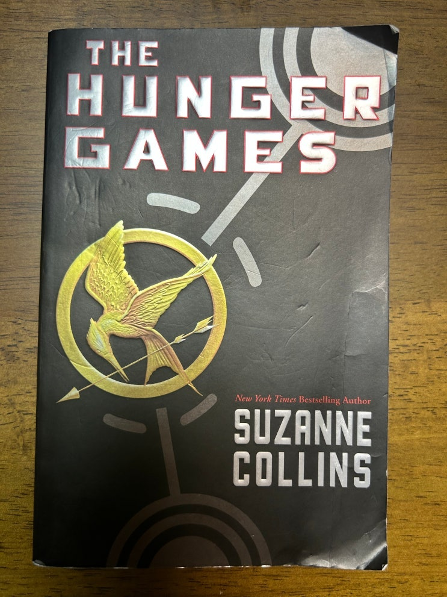

헝거게임 좀 오래 되서 사람들 잘 모를라나.
암튼 10년 전에는 엄청 유명한 프렌차이즈였음.
캣니스 에버딘 역을 맡았던 제니퍼 로랜스가 일순간에 스타텀에 오른 그 영화였음.
제니퍼 길거리 캐스팅 사진이라고 함.
진짜 예쁘다.
원작은 수전콜린스가 쓴 3부작 소설이고 10여년 전 쯤에 한글 번역본으로 읽었었는데 책 정말 재미있다.
시간 순삭이라는 말이 여기 적용됨.
이후 프리 어덜트 pre-adult (청소년) 시장을 타겟으로 한 소설들이 엄청나게 나옴.
그 와중 비교적 성공한 것은 '다이버전트' 정도.
속칭 "돈트리스의 그녀".
워낙 아조씨가 좋아하는 소설이라서 얼마전 부터 원서로 읽어봄.
AR하고 렉사일 지수는 딱 초중딩 수준인데 왜케 읽는데 모르는 단어가 자꾸 나오냐 ㅋㅋㅋ (페이지당 1~2개 정도, 많게는 5개 정도) 아조씨도 워낙 학문으로 영어를 배우다 보니 막상 실생활에서 자주 쓰는 표현이나 단어를 좀 잘 모르는 것 같음.
역시 영어의 길은 멀고도 험하군.
오래간만에 읽으니 새로 눈에 들어오는 것은 헝거게임을 소비하는 사회의 행태이다.
예전에 읽었을 때는 24명 중에서 한명만 살 수 있다는 헝거게임의 데스게임 소재 자체가 엄청 자극적이였는데, 나이 좀 더먹어서 보니 '헝거게임'을 스포츠나 이벤트로서 소비하는 캐피털의 행태가 정말 소름끼침.
소설에는 '시저' 라고 부르는 쇼프로그램의 진행자가 있는데 헝거게임 참여자들 인터뷰 하면서 청중들을 울고 웃기고 들었 다 놨다 하는 프로의 사회자임. 그 사람을 보면 어떠한 악의도 없고 그저 자신의 일을 최선을 다함. 그래서 헝거게임이 최대한 사람들에 의해서 즐겁고 감동적으로 즐겨질 수 있게 노력한다.
헝거게임이 기존에 있었던 베틀로얄(일본) 과는 다르게 세계적으로 성공할 수 있었던 점에는 단순히 죽고 죽이는 베틀로 얄의 하드코어함에다가 두 사람의 사랑 연기 및 사회에 대한 비판적 시각을 잘 버무렸기 때문이 아닐까 한다.
남주만 불쌍하다 불쌍해!!! 캣니스 이런 나쁜뇬 !!
헝거게임은 트릴로지라서 집에 원서가 3권이 있는데, 좀 쉬었다가 2권으로 들어가야겠다.
마지막은 가장 인상 깊었던 문구로 마무리 하고자 한다.
살아남기 위한 사랑쑈에 대한 캣니스의 진심을 알아버린 피타가 고향인 12구역으로 돌아온 후 카메라에 대중들에게 보여 지기 전 캣니스에게 손을 내미는 장면이다.
Out of the corner of my eye, I see Peeta extend his hand. I look at him, unsure.
"One more time? For the audience?"
he says.
His voice isn't angry. It's HOLLOW, which is worse.
Alreadly the boy with the bread is slipping away from me.
흨흨흨 불쌍한 피타 ㅠㅠ 물론 나는 3권까지 다 읽어서 최후의 승자가 누군지 안다 ㅋㅋ